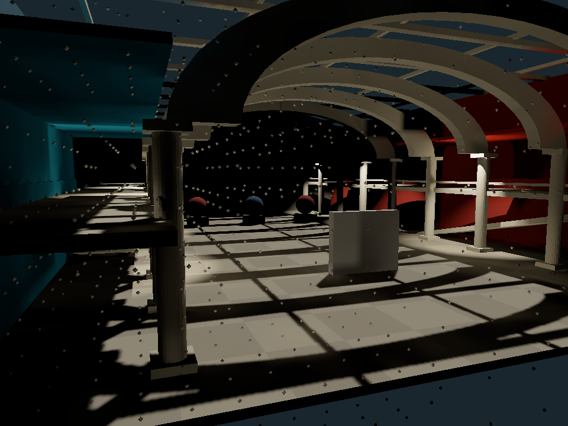
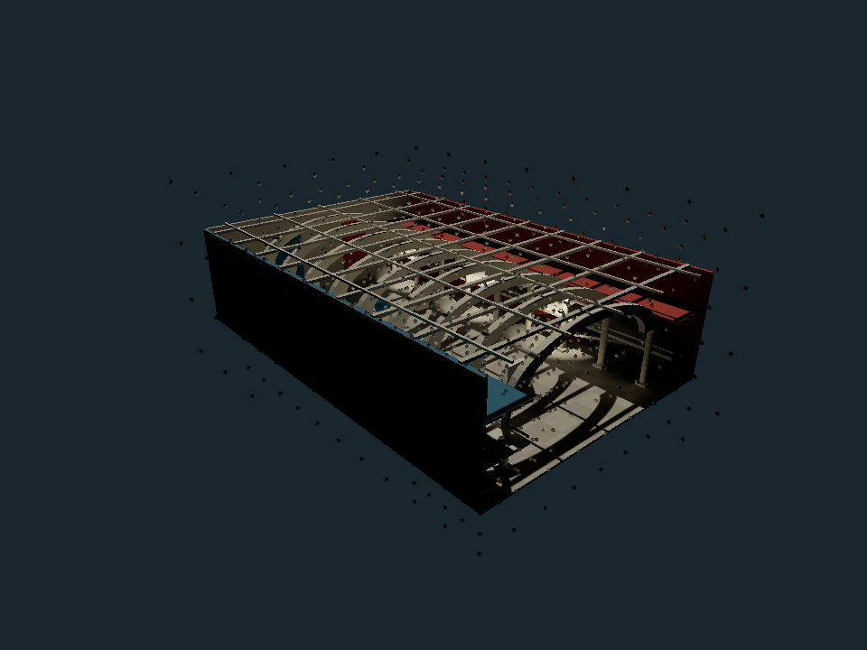
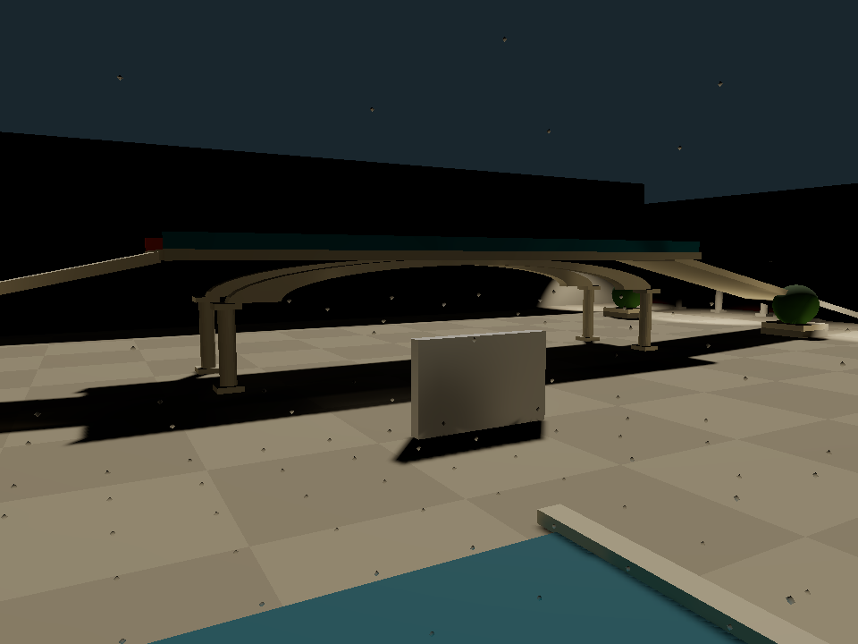
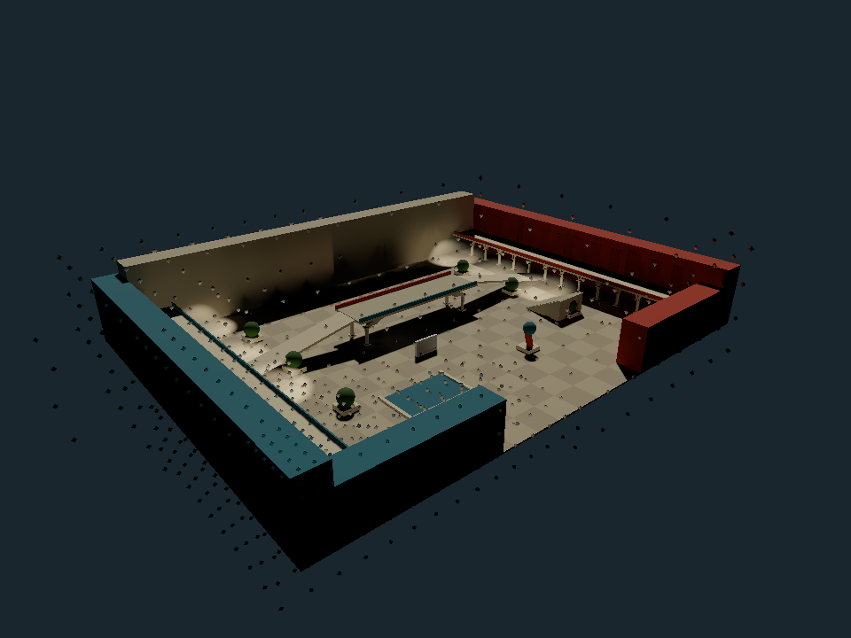

Camera
Whole scene
Inside the scene
Lighting
GI off
GI · 512 probe cap
GI · 2,048 probe cap
Actual probes · 2,048 cap
Atrium · 48 × 72 × 18 units · 315 meshes
Courtyard · 160 × 120 units · 476 meshes



